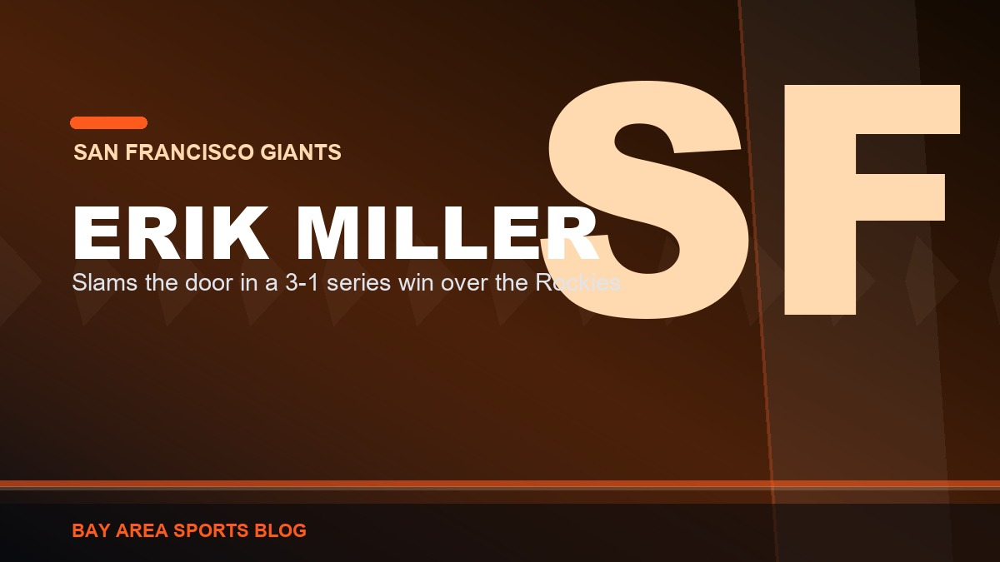

The Giants Bullpen Finally Held One: Erik Miller Slams the Door in a 3-1 Win Over the Rockies
This series started with one of the ugliest losses of the year, a two-out ninth-inning gut punch that felt like the whole season in one inning. Then something funny happened. The Giants won the next one. And then they won this one, 3-1, and for the first time in what feels like forever the bullpen did not hand it back. Erik Miller came in, shut the door, and everyone in the building exhaled.

Let's start where the honesty demands we start, because I am not going to pretend Friday night did not happen. That opener was a horror show. The Giants were two outs from beating the worst team in baseball, and the bullpen gave it right back, a broken-bat single here, a run there, and a 4-3 loss that had the same sickening fingerprints as half a dozen games this year. If you turned the TV off that night muttering something you would not repeat in front of your mother, I do not blame you. It was that kind of loss. The kind that makes you wonder why you keep signing up for this.
Which is exactly why the last two games matter more than the standings say they should. On Saturday the Giants punched back and took it 4-2, Tyler Mahle giving them seven innings of one-run ball and Casey Schmitt providing the big swing. And then Sunday, they finished the job the way you are supposed to finish it against a team you are better than: 3-1, clean, no drama in the ninth. Take the series 3-1 against Colorado and you have done what a real team does. You lose the ugly one, and then you win the next two and make the ugly one a footnote.
The engine of Sunday's win was Trevor McDonald, and this is the version of him you circle. Seven innings, one run on three hits, four strikeouts, and the only blemish was a Jake McCarthy solo shot in the first that you can live with. He set the tone early and never let Colorado breathe. That is a starter doing his entire job, handing the game to the bullpen with a lead and only a handful of outs left to protect. On too many nights this year, that has been the exact moment the floor gave out. Not this time.
Offensively it was Willy Adames carrying the load, and it is nice to type that after the year he has had. Three hits, and the biggest one was a single in the eighth that drove in the run that broke the game open. Drew Gilbert had chipped in an RBI single back in the fourth to answer McCarthy's homer, and by the time the eighth arrived the Giants had turned a 1-1 grind into a 3-1 cushion. It was not a fireworks show. It was the kind of quiet, professional offense that wins low-scoring games in July, one runner at a time, nothing wasted.
But you know what this column is really about, because you felt it too. It is about the ninth inning finally being boring. Erik Miller came in and did the job, shutting the door on the last outs and preserving the win, and I cannot tell you how strange and wonderful it is to write a Giants game story where the last three outs were not an act of psychological warfare against the fan base. For one night, the leverage arm came in, threw strikes, and went home. No walks to leadoff hitters. No two-out heartbreak. Just outs. That is all we have ever asked for.
I am not going to sit here and tell you a 3-1 series win over the Rockies rescues a lost season, because it does not, and I have written enough honest columns about this bullpen to keep it honest now. This team is still what its record says it is. But there is a real difference between a season that is disappointing and a season that is embarrassing, and the way you stay on the right side of that line is exactly this: you take care of business against the teams you should beat, and your bullpen protects a lead when it matters. They did both this weekend. After that opener, that is worth something.
So enjoy this one for what it is. The Giants got gut-punched to start the series, dusted themselves off, and won the next two without letting the ninth inning turn into a crime scene. Erik Miller slammed the door. Willy Adames swung the bat. Trevor McDonald set the whole thing up. It is a good win, a clean win, and a reminder that even in a year like this one, some nights still end the way they are supposed to.
More coverage: Giants section · Columns · Bay Area Sports Blog home